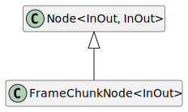

Class FrameChunkNode<InOut>
Type Parameters
-
InOut extends DataFrame
Hierarchy-Diagram
{kind=link}
Legend
 class
class
Hierarchy
- Node<InOut, InOut>
- FrameChunkNode
Index
Constructors
Properties
Accessors
Methods
Constructors
constructor
- new
Frame Chunk Node<InOut>(count, timeout?, timeoutUnit?, options?): FrameChunkNode<InOut> -
Type Parameters
-
InOut extends DataFrame
Parameters
-
count: number
-
Optionaltimeout: number -
timeoutUnit: TimeUnit = TimeUnit.MILLISECOND
-
Optionaloptions: NodeOptions
Returns FrameChunkNode<InOut>
-
Properties
Protected options
Static Readonly capture
Value: Symbol.for('nodejs.rejection')
See how to write a custom rejection handler.
Since
v13.4.0, v12.16.0
Static capture
Value: boolean
Change the default captureRejections option on all new EventEmitter objects.
Since
v13.4.0, v12.16.0
Static default
By default, a maximum of 10 listeners can be registered for any single
event. This limit can be changed for individual EventEmitter instances
using the emitter.setMaxListeners(n) method. To change the default
for allEventEmitter instances, the events.defaultMaxListenersproperty can be used. If this value is not a positive number, a RangeErroris thrown.
Take caution when setting the events.defaultMaxListeners because the
change affects allEventEmitter instances, including those created before
the change is made. However, calling emitter.setMaxListeners(n) still has
precedence over events.defaultMaxListeners.
This is not a hard limit. The EventEmitter instance will allow
more listeners to be added but will output a trace warning to stderr indicating
that a "possible EventEmitter memory leak" has been detected. For any singleEventEmitter, the emitter.getMaxListeners() and emitter.setMaxListeners()methods can be used to
temporarily avoid this warning:
import { EventEmitter } from 'node:events';
const emitter = new EventEmitter();
emitter.setMaxListeners(emitter.getMaxListeners() + 1);
emitter.once('event', () => {
// do stuff
emitter.setMaxListeners(Math.max(emitter.getMaxListeners() - 1, 0));
});
The --trace-warnings command-line flag can be used to display the
stack trace for such warnings.
The emitted warning can be inspected with process.on('warning') and will
have the additional emitter, type, and count properties, referring to
the event emitter instance, the event's name and the number of attached
listeners, respectively.
Its name property is set to 'MaxListenersExceededWarning'.
Since
v0.11.2
Static Readonly error
This symbol shall be used to install a listener for only monitoring 'error'events. Listeners installed using this symbol are called before the regular'error' listeners are called.
Installing a listener using this symbol does not change the behavior once an'error' event is emitted. Therefore, the process will still crash if no
regular 'error' listener is installed.
Since
v13.6.0, v12.17.0
Accessors
model
Methods
add
- add
Listener(eventName, listener): FrameChunkNode<InOut> -
Alias for
emitter.on(eventName, listener).Parameters
-
eventName: string | symbol
-
listener: ((...args) => void)
-
- (...args): void
-
Parameters
-
Rest...args: any[]
Returns void
-
-
Returns FrameChunkNode<InOut>
Since
v0.1.26
-
event
- event
Names(): (string | symbol)[] -
Returns an array listing the events for which the emitter has registered listeners. The values in the array are strings or
Symbols.import { EventEmitter } from 'node:events';
const myEE = new EventEmitter();
myEE.on('foo', () => {});
myEE.on('bar', () => {});
const sym = Symbol('symbol');
myEE.on(sym, () => {});
console.log(myEE.eventNames());
// Prints: [ 'foo', 'bar', Symbol(symbol) ]Returns (string | symbol)[]
Since
v6.0.0
get
- get
Max Listeners(): number -
Returns the current max listener value for the
EventEmitterwhich is either set byemitter.setMaxListeners(n)or defaults to defaultMaxListeners.Returns number
Since
v1.0.0
get
- get
Options(): NodeOptions -
Get the node options
Returns NodeOptions
Node options
listener
- listener
Count(eventName, listener?): number -
Returns the number of listeners listening for the event named
eventName. Iflisteneris provided, it will return how many times the listener is found in the list of the listeners of the event.Parameters
-
eventName: string | symbol
The name of the event being listened for
-
Optionallistener: FunctionThe event handler function
Returns number
Since
v3.2.0
-
listeners
- listeners(eventName): Function[]
-
Returns a copy of the array of listeners for the event named
eventName.server.on('connection', (stream) => {
console.log('someone connected!');
});
console.log(util.inspect(server.listeners('connection')));
// Prints: [ [Function] ]Parameters
-
eventName: string | symbol
Returns Function[]
Since
v0.1.26
-
off
- off(eventName, listener): FrameChunkNode<InOut>
-
Alias for
emitter.removeListener().Parameters
-
eventName: string | symbol
-
listener: ((...args) => void)
-
- (...args): void
-
Parameters
-
Rest...args: any[]
Returns void
-
-
Returns FrameChunkNode<InOut>
Since
v10.0.0
-
prepend
- prepend
Listener(eventName, listener): FrameChunkNode<InOut> -
Adds the
listenerfunction to the beginning of the listeners array for the event namedeventName. No checks are made to see if thelistenerhas already been added. Multiple calls passing the same combination ofeventNameandlistenerwill result in thelistenerbeing added, and called, multiple times.server.prependListener('connection', (stream) => {
console.log('someone connected!');
});Returns a reference to the
EventEmitter, so that calls can be chained.Parameters
-
eventName: string | symbol
The name of the event.
-
listener: ((...args) => void)
The callback function
-
- (...args): void
-
Parameters
-
Rest...args: any[]
Returns void
-
-
Returns FrameChunkNode<InOut>
Since
v6.0.0
-
prepend
- prepend
Once Listener(eventName, listener): FrameChunkNode<InOut> -
Adds a one-time
listenerfunction for the event namedeventNameto the beginning of the listeners array. The next timeeventNameis triggered, this listener is removed, and then invoked.server.prependOnceListener('connection', (stream) => {
console.log('Ah, we have our first user!');
});Returns a reference to the
EventEmitter, so that calls can be chained.Parameters
-
eventName: string | symbol
The name of the event.
-
listener: ((...args) => void)
The callback function
-
- (...args): void
-
Parameters
-
Rest...args: any[]
Returns void
-
-
Returns FrameChunkNode<InOut>
Since
v6.0.0
-
raw
- raw
Listeners(eventName): Function[] -
Returns a copy of the array of listeners for the event named
eventName, including any wrappers (such as those created by.once()).import { EventEmitter } from 'node:events';
const emitter = new EventEmitter();
emitter.once('log', () => console.log('log once'));
// Returns a new Array with a function `onceWrapper` which has a property
// `listener` which contains the original listener bound above
const listeners = emitter.rawListeners('log');
const logFnWrapper = listeners[0];
// Logs "log once" to the console and does not unbind the `once` event
logFnWrapper.listener();
// Logs "log once" to the console and removes the listener
logFnWrapper();
emitter.on('log', () => console.log('log persistently'));
// Will return a new Array with a single function bound by `.on()` above
const newListeners = emitter.rawListeners('log');
// Logs "log persistently" twice
newListeners[0]();
emitter.emit('log');Parameters
-
eventName: string | symbol
Returns Function[]
Since
v9.4.0
-
remove
- remove
All Listeners(event?): FrameChunkNode<InOut> -
Removes all listeners, or those of the specified
eventName.It is bad practice to remove listeners added elsewhere in the code, particularly when the
EventEmitterinstance was created by some other component or module (e.g. sockets or file streams).Returns a reference to the
EventEmitter, so that calls can be chained.Parameters
-
Optionalevent: string | symbol
Returns FrameChunkNode<InOut>
Since
v0.1.26
-
remove
- remove
Listener(eventName, listener): FrameChunkNode<InOut> -
Removes the specified
listenerfrom the listener array for the event namedeventName.const callback = (stream) => {
console.log('someone connected!');
};
server.on('connection', callback);
// ...
server.removeListener('connection', callback);removeListener()will remove, at most, one instance of a listener from the listener array. If any single listener has been added multiple times to the listener array for the specifiedeventName, thenremoveListener()must be called multiple times to remove each instance.Once an event is emitted, all listeners attached to it at the time of emitting are called in order. This implies that any
removeListener()orremoveAllListeners()calls after emitting and before the last listener finishes execution will not remove them fromemit()in progress. Subsequent events behave as expected.import { EventEmitter } from 'node:events';
class MyEmitter extends EventEmitter {}
const myEmitter = new MyEmitter();
const callbackA = () => {
console.log('A');
myEmitter.removeListener('event', callbackB);
};
const callbackB = () => {
console.log('B');
};
myEmitter.on('event', callbackA);
myEmitter.on('event', callbackB);
// callbackA removes listener callbackB but it will still be called.
// Internal listener array at time of emit [callbackA, callbackB]
myEmitter.emit('event');
// Prints:
// A
// B
// callbackB is now removed.
// Internal listener array [callbackA]
myEmitter.emit('event');
// Prints:
// ABecause listeners are managed using an internal array, calling this will change the position indices of any listener registered after the listener being removed. This will not impact the order in which listeners are called, but it means that any copies of the listener array as returned by the
emitter.listeners()method will need to be recreated.When a single function has been added as a handler multiple times for a single event (as in the example below),
removeListener()will remove the most recently added instance. In the example theonce('ping')listener is removed:import { EventEmitter } from 'node:events';
const ee = new EventEmitter();
function pong() {
console.log('pong');
}
ee.on('ping', pong);
ee.once('ping', pong);
ee.removeListener('ping', pong);
ee.emit('ping');
ee.emit('ping');Returns a reference to the
EventEmitter, so that calls can be chained.Parameters
-
eventName: string | symbol
-
listener: ((...args) => void)
-
- (...args): void
-
Parameters
-
Rest...args: any[]
Returns void
-
-
Returns FrameChunkNode<InOut>
Since
v0.1.26
-
set
- set
Max Listeners(n): FrameChunkNode<InOut> -
By default
EventEmitters will print a warning if more than10listeners are added for a particular event. This is a useful default that helps finding memory leaks. Theemitter.setMaxListeners()method allows the limit to be modified for this specificEventEmitterinstance. The value can be set toInfinity(or0) to indicate an unlimited number of listeners.Returns a reference to the
EventEmitter, so that calls can be chained.Parameters
-
n: number
Returns FrameChunkNode<InOut>
Since
v0.3.5
-
set
- set
Options(options): FrameChunkNode<InOut> -
Set the node options
Parameters
-
options: NodeOptions
Node options to set
Returns FrameChunkNode<InOut>
Node instance
-
Static add
- add
Abort Listener(signal, resource): Disposable ExperimentalListens once to the
abortevent on the providedsignal.Listening to the
abortevent on abort signals is unsafe and may lead to resource leaks since another third party with the signal can calle.stopImmediatePropagation(). Unfortunately Node.js cannot change this since it would violate the web standard. Additionally, the original API makes it easy to forget to remove listeners.This API allows safely using
AbortSignals in Node.js APIs by solving these two issues by listening to the event such thatstopImmediatePropagationdoes not prevent the listener from running.Returns a disposable so that it may be unsubscribed from more easily.
import { addAbortListener } from 'node:events';
function example(signal) {
let disposable;
try {
signal.addEventListener('abort', (e) => e.stopImmediatePropagation());
disposable = addAbortListener(signal, (e) => {
// Do something when signal is aborted.
});
} finally {
disposable?.[Symbol.dispose]();
}
}Parameters
-
signal: AbortSignal
-
resource: ((event) => void)
-
- (event): void
-
Parameters
-
event: Event
Returns void
-
-
Returns Disposable
that removes the
abortlistener.Since
v20.5.0
-
Static get
- get
Event Listeners(emitter, name): Function[] -
Returns a copy of the array of listeners for the event named
eventName.For
EventEmitters this behaves exactly the same as calling.listenerson the emitter.For
EventTargets this is the only way to get the event listeners for the event target. This is useful for debugging and diagnostic purposes.import { getEventListeners, EventEmitter } from 'node:events';
{
const ee = new EventEmitter();
const listener = () => console.log('Events are fun');
ee.on('foo', listener);
console.log(getEventListeners(ee, 'foo')); // [ [Function: listener] ]
}
{
const et = new EventTarget();
const listener = () => console.log('Events are fun');
et.addEventListener('foo', listener);
console.log(getEventListeners(et, 'foo')); // [ [Function: listener] ]
}Parameters
-
emitter: EventEmitter | _DOMEventTarget
-
name: string | symbol
Returns Function[]
Since
v15.2.0, v14.17.0
-
Static get
- get
Max Listeners(emitter): number -
Returns the currently set max amount of listeners.
For
EventEmitters this behaves exactly the same as calling.getMaxListenerson the emitter.For
EventTargets this is the only way to get the max event listeners for the event target. If the number of event handlers on a single EventTarget exceeds the max set, the EventTarget will print a warning.import { getMaxListeners, setMaxListeners, EventEmitter } from 'node:events';
{
const ee = new EventEmitter();
console.log(getMaxListeners(ee)); // 10
setMaxListeners(11, ee);
console.log(getMaxListeners(ee)); // 11
}
{
const et = new EventTarget();
console.log(getMaxListeners(et)); // 10
setMaxListeners(11, et);
console.log(getMaxListeners(et)); // 11
}Parameters
-
emitter: EventEmitter | _DOMEventTarget
Returns number
Since
v19.9.0
-
Static listener
- listener
Count(emitter, eventName): number -
A class method that returns the number of listeners for the given
eventNameregistered on the givenemitter.import { EventEmitter, listenerCount } from 'node:events';
const myEmitter = new EventEmitter();
myEmitter.on('event', () => {});
myEmitter.on('event', () => {});
console.log(listenerCount(myEmitter, 'event'));
// Prints: 2Parameters
-
emitter: EventEmitter
The emitter to query
-
eventName: string | symbol
The event name
Returns number
Since
v0.9.12
Deprecated
Since v3.2.0 - Use
listenerCountinstead. -
Static on
- on(emitter, eventName, options?): AsyncIterableIterator<any>
-
import { on, EventEmitter } from 'node:events';
import process from 'node:process';
const ee = new EventEmitter();
// Emit later on
process.nextTick(() => {
ee.emit('foo', 'bar');
ee.emit('foo', 42);
});
for await (const event of on(ee, 'foo')) {
// The execution of this inner block is synchronous and it
// processes one event at a time (even with await). Do not use
// if concurrent execution is required.
console.log(event); // prints ['bar'] [42]
}
// Unreachable hereReturns an
AsyncIteratorthat iterateseventNameevents. It will throw if theEventEmitteremits'error'. It removes all listeners when exiting the loop. Thevaluereturned by each iteration is an array composed of the emitted event arguments.An
AbortSignalcan be used to cancel waiting on events:import { on, EventEmitter } from 'node:events';
import process from 'node:process';
const ac = new AbortController();
(async () => {
const ee = new EventEmitter();
// Emit later on
process.nextTick(() => {
ee.emit('foo', 'bar');
ee.emit('foo', 42);
});
for await (const event of on(ee, 'foo', { signal: ac.signal })) {
// The execution of this inner block is synchronous and it
// processes one event at a time (even with await). Do not use
// if concurrent execution is required.
console.log(event); // prints ['bar'] [42]
}
// Unreachable here
})();
process.nextTick(() => ac.abort());Parameters
-
emitter: EventEmitter
-
eventName: string
The name of the event being listened for
-
Optionaloptions: StaticEventEmitterOptions
Returns AsyncIterableIterator<any>
that iterates
eventNameevents emitted by theemitterSince
v13.6.0, v12.16.0
-
Static once
- once(emitter, eventName, options?): Promise<any[]>
-
Creates a
Promisethat is fulfilled when theEventEmitteremits the given event or that is rejected if theEventEmitteremits'error'while waiting. ThePromisewill resolve with an array of all the arguments emitted to the given event.This method is intentionally generic and works with the web platform EventTarget interface, which has no special
'error'event semantics and does not listen to the'error'event.import { once, EventEmitter } from 'node:events';
import process from 'node:process';
const ee = new EventEmitter();
process.nextTick(() => {
ee.emit('myevent', 42);
});
const [value] = await once(ee, 'myevent');
console.log(value);
const err = new Error('kaboom');
process.nextTick(() => {
ee.emit('error', err);
});
try {
await once(ee, 'myevent');
} catch (err) {
console.error('error happened', err);
}The special handling of the
'error'event is only used whenevents.once()is used to wait for another event. Ifevents.once()is used to wait for the 'error'event itself, then it is treated as any other kind of event without special handling:import { EventEmitter, once } from 'node:events';
const ee = new EventEmitter();
once(ee, 'error')
.then(([err]) => console.log('ok', err.message))
.catch((err) => console.error('error', err.message));
ee.emit('error', new Error('boom'));
// Prints: ok boomAn
AbortSignalcan be used to cancel waiting for the event:import { EventEmitter, once } from 'node:events';
const ee = new EventEmitter();
const ac = new AbortController();
async function foo(emitter, event, signal) {
try {
await once(emitter, event, { signal });
console.log('event emitted!');
} catch (error) {
if (error.name === 'AbortError') {
console.error('Waiting for the event was canceled!');
} else {
console.error('There was an error', error.message);
}
}
}
foo(ee, 'foo', ac.signal);
ac.abort(); // Abort waiting for the event
ee.emit('foo'); // Prints: Waiting for the event was canceled!Parameters
-
emitter: _NodeEventTarget
-
eventName: string | symbol
-
Optionaloptions: StaticEventEmitterOptions
Returns Promise<any[]>
Since
v11.13.0, v10.16.0
-
- once(emitter, eventName, options?): Promise<any[]>
-
Parameters
-
emitter: _DOMEventTarget
-
eventName: string
-
Optionaloptions: StaticEventEmitterOptions
Returns Promise<any[]>
-
Static set
- set
Max Listeners(n?, ...eventTargets): void -
import { setMaxListeners, EventEmitter } from 'node:events';
const target = new EventTarget();
const emitter = new EventEmitter();
setMaxListeners(5, target, emitter);Parameters
-
Optionaln: numberA non-negative number. The maximum number of listeners per
EventTargetevent. -
Rest...eventTargets: (EventEmitter | _DOMEventTarget)[]
Returns void
Since
v15.4.0
-
Node options